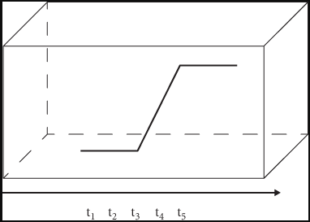
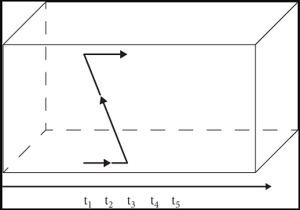
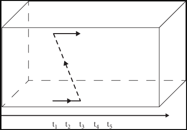

5 Time Travel Revisited
We have distinguished two very different approaches to tense and the ontology of time. The next task is to investigate the extent to which they are more or less hospitable to the very possibility of time travel.
5.1 Time Travel and the B-Theory
Since the B-Theory describes spacetime as a four-dimensional manifold, its occupants leave a four-dimensional region as a trace, which we may call their spatiotemporal path. The path of a particle consists of different temporal parts, which correspond to different times at which the occupant exists.

What sets a particle that travels back in time apart from the rest is that it describes a peculiar path in spacetime. There are several options at this point.
- The particle describes a continuous zig-zag path. The particle begins at rest and eventually (at \(t_3\)) travels back in time while moving upward in space.
- The particle describes a discontinuous path. It begins at rest and eventually jumps back in time without intermediate temporal stages. The dotted line indicates a direct causal connection between the last stage before the particle travels back in time and the very first stage after the particle emerges in the past.
Continuous Time Travel  |
Discontinous Time Travel  |
|---|---|
| Continuous Zig Zag Streak | Discontinuous Streak |
Travel into the future invites a similar distinction, though notice that the path of a time traveler who experiences continuous travel into the future looks exactly like that of non-time-travelers. The only difference is that there is a discrepancy between temporal and external time: one unit of personal time might correspond to a great many units of external time. This is what leads David Lewis to describe the path of continuous travel into the future as a stretched out streak.
H.G. Wells appeared to have the continuous model in mind when he wrote The Time Machine:
I drew a breath, set my teeth, gripped the starting lever with both hands, and went off with a thud. The laboratory got hazy and went dark. Mrs Watchett came in and walked, apparently without seeing me, towards the garden door. I suppose it took her a minute or so to traverse the place, but to me she seemed to shoot across the room like a rocket. I pressed the lever over to its extreme position. The night came like the turning out of a lamp, and in another moment came to-morrow. The laboratory grew faint and hazy, then fainter and even fainter, To-morrow night came black, then day again, night again, day again, faster and faster still …
The character does not disappear when the machine is turned on. Rather, both character and machine stay where they are, which everything in their immediate vicinity appears to speed up.
5.1.1 Double Occupancy?
What should we make of continuous time travel into the past? Here is H. G. Wells again:
The peculiar risk lay in the possibility of finding some substance in the space which, I or the machine, occupied. So long as I travelled at a high velocity through time, this scarcely mattered. I was, so to speak, attenuated—was slipping like a vapour through the interstices of intervening substances! But to come to a stop involved the jamming of myself, molecule by molecule, into whatever lay in my way; meant bringing my atoms into such intimate contact with those of the obstacle that a profound chemical reaction—possibly a far-reaching explosion—would result, and blow myself and my apparatus out of all possible dimensions—into the Unknown.
One way to put the problem is this. If the machine stays in the exact place as it moves back and forth in time, backward time travel would require the machine to retrace its own path in spacetime, which would in turn require two different stages of the machine to occupy the same region of space at the same time. Since no two material objects can occupy the same place at the same time, backward time travel is impossible for Wells’ machine.
It is unclear how Wells’ thought that the time-traveler moves at a high-velocity through time is supposed to help with the problem, but the question is how to make sense of continuous backward time travel in a four-dimensional manifold more generally. Notice that there is no similar problem for discontinuous backward time travel.
5.2 Time Travel and the A-Theory
The question now is whether the A-Theory places one in a position to make sense of time travel. (Lewis 1976) characterizes time travel within a four-dimensional manifold in terms of a discrepancy between personal time and external time. These resources are similarly available to spotlight theorists, who embrace the ontology of the four-dimensional framework. The only difference with the B-Theory is that they posit a variety of further A-facts explained in terms of the distinction between past, present, and future.
5.2.1 Time Travel and Presentism
Presentism would seem to be at a disadvantage when it comes to the question of how to make sense of time travel. In what follows, we consider at least three different arguments against the thesis that time travel is possible if presentism is true.
5.2.1.1 The No Destination Argument
One argument begins with the observation that there are no past or future times from the standpoint of presentism. Since time travel is travel to either past or present times, there is nothing for the time traveler to travel to. Therefore, time travel is impossible from the standpoint of presentism.
- If presentism is true, then there are no past or future times.
- It is impossible to travel to things that do not exist.
- If it is impossible to travel to past or future times, then time travel is impossible.
- So, if presentism is true, then time travel is impossible.
This line of argument appears to prove too much. For consider the parallel argument:
- If presentism is true, then there are no past events or objects.
- It is impossible to study things that do not exist.
- If it is impossible to study past events, then the study of history is impossible.
- So, if presentism is true, then the study of history is impossible.
What the argument overlooks is that there is, according to presentism, a wide range of facts that constitute the subject matter of history. These are past-tensed facts such as, for example:
It was the case that Rome dominated the Medierranean during the third century.
It was the case that the Berlin Wall divided East and West Berlin between 1961 and 1989.
Note that ‘it was the case that’ operates on a simpler sentence, e.g., ‘Rome dominates the Mediterranean during the third century’, and that the tensed sentence may be true even if some of the terms involve in the simple sentences fail to denote. Compare:
- Louis believes that Superman wears red and blue,
where ‘Louis believes’ operates on ‘Superman wears red and blue’. Furthermore, the truth of the complex sentence need not require the existence of any such thing as Superman. In fact, we should resist the inference from that belief attribution to:
- There is someone which Louise believes to wear read and blue.
Likewise for the presentist, who will explicitly reject the inference from:
- It was the case that the Berlin Wall divided East and West Berlin from 1961 to 1989.
to:
- There is something, which divided East and West Berlin from 1961 to 1989.
5.2.1.2 The Definitional Argument
Granted, there are tensed facts for the presentist. But there is a further question as to what time travel amounts to by the lights of presentism. For recall that (Lewis 1976) characterizes time travel in terms of a discrepancy between personal and external time.
Personal time is an assignment of coordinates to temporal stages of the time traveler that corresponds to the causal order and metric for those stages. There is time travel when the assignment of coordinates differs from the external times corresponding to those temporal stages. Unfortunately, there is but one temporary stage for each object, and it is not clear how to make sense of the alleged discrepancy between temporal and external time.
It will come as no surprise that the presentist will resort to appropriate tensed facts in order to capture the time travel scenario depicted by the diagram below:
Let us momentarily assume \(t_3\) is present, and that all that exists is confined to \(t_3\) in line with presentism. The external facts of the case include:
\(p_3\) exists at spatial coordinate \(a_3\) and \(p_3\) exists at spatial coordinate \(b_3\), but \(p_1\) and \(p_2\) do not exists at spatial coordinates \(a_2\) and \(b_2\).
It will be the case for \(p\) that \(p_3\) exists at coordinate \(b_3\).
It will not be that \(p_3\) exists at coordinate \(b_3\).
The truth conditions for the second sentence involve a judgment as to whether or not \(p_3\) at \(b_3\) is an appropriate causal successor for \(p_3\) at \(b_2\).
5.2.2 Time Travel and the Growing Block Theory
One consideration in favor of the Growing Block Theory is that it appears to motivate an important asymmetry between present and past and future. While the past is fixed and past-tensed truths grounded by facts concerned with past events and objects, the future is open. There are no future events or objects on which to ground future-tensed truths.
5.2.2.1 Time Travel and the Open Future
The open future view suggests an asymmetry between past and future truths:
Past and present truths are either determinately true or determinately false.
Future truths are neither determinately true nor determinately false.
Consider the scenario depicted by Ted Chiang in What’s Expected of Us. In particular, consider the case in which there is a flash in the Predictor at a given time \(t\). According to the open future view:
- It is not determinately true that you will press the button, and it is not determinately true that you will not press the button.
- If is not determinately true that you will press the button, then it is not determinately true that the flash is caused by your pressing the button.
- If it is not determinately true that you will not press the button, then it is not determinately true that the flash is not caused by your pressing the button.
- Therefore, it is not determinately true that the flash is caused by your pressing the button, and it is not determinately true that the flash is not caused by your pressing the button.
But unlike future-tensed truths, past-tensed truths are fixed, which means that:
- Either it is determinately true that the flash is caused by your pressing the button or it is determinately true that the flash is not caused by your pressing the button.
We now have a contradiction. What is less clear is that the proper response is simply to deny the very possibility of time travel as it is to deny the coherence of the asymmetry between past and future. One could respond to the argument that despite appearances to the contrary, future-tensed truths are determinately true if past-tensed truths are. Compare with Aristotle’s Sea Battle Argument:
- If there will be a sea battle tomorrow, then it has always been the case in the past that there would be a sea battle tomorrow.
- If it has always been the case in the past that there would be a sea battle tomorrow, then it is determinately true that it has always been the case that there would be a sea battle tomorrow.
- If it is determinately true that it has always been the case in the past that there would be a sea battle tomorrow, then it is determinately true that there will be a sea battle tomorrow.
- So, if there will be a sea battle tomorrow, then it is determinately true that there will be a sea battle tomorrow.
That is, the future is fixed if the past is. There is no room for the asymmetry between the fixed past and the open future.